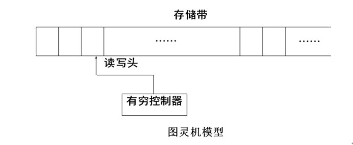
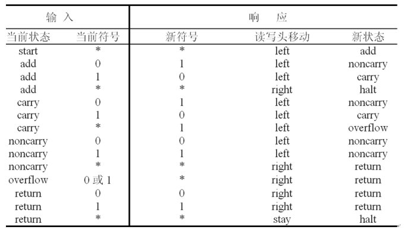
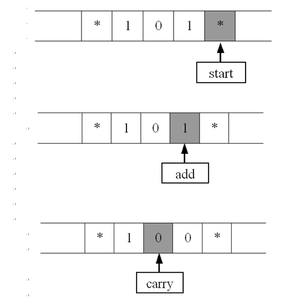
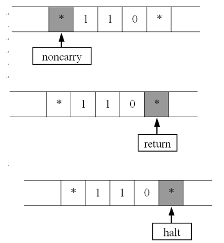
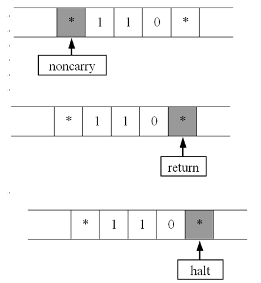
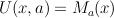
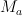
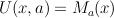
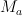

A Turing machine is an abstract machine that manipulates symbols on a strip of tape according to a table of rules; to be more exact, it is a mathematical model of computation that defines such a device. Despite the model's simplicity, given any computer algorithm, a Turing machine can be constructed that is capable of simulating that algorithm's logic.
The machine operates on an infinite memory tape divided into cells. The machine positions its head over a cell and "reads" (scans) the symbol there. Then per the symbol and its present place in a finite table of user-specified instructions the machine (i) writes a symbol (e.g. a digit or a letter from a finite alphabet) in the cell (some models allowing symbol erasure and/or no writing), then (ii) either moves the tape one cell left or right (some models allow no motion, some models move the head), then (iii) (as determined by the observed symbol and the machine's place in the table) either proceeds to a subsequent instruction or halts the computation.
The Turing machine was invented in 1936 by Alan Turing, who called it an a-machine (automatic machine). With this model Turing was able to answer two questions in the negative: (1) Does a machine exist that can determine whether any arbitrary machine on its tape is "circular" (e.g. freezes, or fails to continue its computational task); similarly, (2) does a machine exist that can determine whether any arbitrary machine on its tape ever prints a given symbol. Thus by providing a mathematical description of a very simple device capable of arbitrary computations, he was able to prove properties of computation in general - and in particular, the uncomputability of the Hilbert Entscheidungsproblem ("decision problem").
图灵先知先觉，在电子计算机远未问世之前，他已经想到所谓“可计算性”的问题。物理学家阿基米得曾宣称:“给我足够长的杠杆和一个支点，我就能撬动地球。”类似的问题是，数学上的某些计算问题，是不是只要给数学家足够长的时间，就能够通过“有限次”的简单而机械的演算步骤而得到最终答案呢？这就是所谓“可计算性”问题，一个必须在理论上做出解释的数学难题。
经过智慧与深邃的思索，图灵以人们想不到的方式，回答了这个既是数学又是哲学的艰深问题。1936年，图灵在伦敦权威的数学杂志上发表了一篇划时代的重要论文《可计算数字及其在判断性问题中的应用》。文章里，图灵超出了一般数学家的思维范畴，完全抛开数学上定义新概念的传统方式，独辟蹊径，构造出一台完全属于想象中的“计算机”，数学家们把它称为“图灵机”。这样的奇思妙想只能属于思维像“袋鼠般地跳跃”的图灵。
“图灵机”想象使用一条无限长度的纸带子，带子上划分成许多格子。如果格里画条线，就代表“1”；空白的格子，则代表“0”。想象这个“计算机”还具有读写功能:既可以从带子上读出信息，也可以往带子上写信息。计算机仅有的运算功能是:每把纸带子向前移动一格，就把“1”变成“0”，或者把“0”变成“1”。“0”和“1”代表着在解决某个特定数学问题中的运算步骤。“图灵机”能够识别运算过程中每一步，并且能够按部就班地执行一系列的运算，直到获得最终答案。
“图灵机”是一个虚拟的“计算机”，完全忽略硬件状态，考虑的焦点是逻辑结构。图灵在他那篇著名的文章里，还进一步设计出被人们称为“通用图灵机”的模型，它可以模拟其他任何一台解决某个特定数学问题的“图灵机”的工作状态。他甚至还想象在带子上存储数据和程序。“通用图灵机”实际上就是现代通用计算机的最原始的模型。
不过图灵在提出图灵机构想之后，又发现了新问题，有些问题图灵机是无法计算的。比如定义模糊的问题，如“人生有何意义”，或者缺乏数据的问题，“明天3D中奖号是多少”，其答案当然是无法计算出来的。但也有一些定义完美的计算问题，它们亦是不可解的，这类问题称为不可计算问题。
从上述形式定义可以看出模型的关键在于有穷控制器中的状态转换函数，根据图灵的通用计算理论，这个转换函数是灵活可变的（对应于通用图灵机），当然也可以使单一的（对应于专用图灵机，即便如此，它的能力也强于有限状态机，因为图灵机是可以接受0级语言的），不过这并非图灵提出图灵机的意义所在。
下面我们来比较有限状态机与通用图灵机的区别所在：
1、图灵机既能读又能写；
2、带子是无限长的（可以无限存储，结合读写头既能左移又能右移的特点，当然就可以解决判断输入的0与1个数谁多的问题），而且带子上不但可以写入数据，还可以写入实现某一具体功能的；
3、进入拒绝和接收状态立即停机；
同有限状态机一样，我们构造一个图灵机来实现一个简单的功能。
目标：利用二进制来设计一个专门计算“x+1”的图灵机，要求计算完成时，读写头要回归原位。
状态集合K：
{start，add，carry，noncarry，overflow，return，halt}；
字母表∑：{0，1，*}；
初始状态s：start；
停机状态集合H：{halt}；
规则集合δ：
实现步骤：

 

从这个过程中我们发现，虽然图灵机可以实现x+1的功能，但是他的工作流程理解起来并不是人们日常的计算过程，甚至与现代计算机的计算原理也并无太大相关。这是因为与现代计算机相比，它的计算方式也还是有局限性，由于图灵机每次只能读入一个数据，改写所读入的数据，而不像现代计算机可以同时读入多个数据、改写其他数据，所以相应的算法难理解性也就增加。
图灵机的意义与思想内涵：
图灵提出图灵机的模型并不是为了同时给出计算机的设计，它的意义我认为有如下几点：
1、它证明了通用计算理论，肯定了计算机实现的可能性，同时它给出了计算机应有的主要架构；
2、图灵机模型引入了读写与算法与程序语言的概念，极大的突破了过去的计算机器的设计理念；
3、图灵机模型理论是计算学科最核心的理论，因为计算机的极限计算能力就是通用图灵机的计算能力，很多问题可以转化到图灵机这个简单的模型来考虑。
对图灵机给出如此高的评价并不是高估，因为从它的设计与运行中，我们可以看到其中蕴涵的很深邃的思想。
通用图灵机等于向我们展示这样一个过程：程序和其输入可以先保存到存储带上，图灵机就按程序一步一步运行直到给出结果，结果也保存在存储带上。
另外，我们可以隐约看到现代计算机主要构成（其实就是冯诺依曼理论的主要构成），存储器（相当于存储带），中央处理器（控制器及其状态，并且其字母表可以仅有0和1两个符号），IO系统（相当于存储带的预先输入）；
正是在图灵搭建的理论基础之上，计算机才有了后来的蓬勃发展。美国的阿坦纳索夫在1939年果然研究制造了世界上的第一台电子计算机ABC，其中采用了二进位制，电路的开与合分别代表数字0与1，运用电子管和电路执行逻辑运算等。ABC是“图灵机”的第一个硬件实现。冯·诺依曼不仅在上个世纪40年代研制成功了功能更好、用途更为广泛的电子计算机，并且为计算机设计了编码程序，还实现了运用纸带存储与输入。至此，天才图灵在1936年发表的科学预见和构思得以完全实现。
图灵理论的一个基本要求是所有信息都可用符号编码，包括图灵机本身（相当于对图灵机自身功能的描述）。编码方式使我们首先要考虑的，这主要取决于编码集的元素个数与编码元素之间的关系。在图灵机的实现中我们可以看到图灵采用的是0、1编码，当然，乍看上去我们可能会觉得不太可能，难道我们平时接触的复杂而又多样的种种事物都可以用简单的0、1表示么？就算是表示了出来又通过方式进行运算得到我们想要的结果呢？这些其实都不是我们需要考虑的，因为这些已经被解决，而完成这项工作的人就是乔治·布尔，19世纪的英国逻辑学家，他将人类的逻辑思维简化为一些数学运算，还发明了一种语言用于描写与处理各种逻辑命题和确定其真假与否，这种语言被称作逻辑代数，同图灵机的构想一样，在当时布尔并不认为是在为计算机的发展做出贡献，虽然事后证明的确意义重大。完成将布尔代数引入计算机科学领域的是克劳德·香农，他创立了信息论，并在其中定义了我们称之为“二进制位”的信息度量。采用二进制主要基于以下原因：
（1）技术实现简单：当然这与我们后面要讲到的内容有关（最终我们的计算机要由逻辑电路组成，逻辑电路通常只有两个状态，开关的接通与断开，这两种状态正好可以用“1”和“0”表示。
（2）简化运算规则：两个二进制数和、积运算组合各有三种，（求和法则3个：0+0=0,0+1=1+0=1,1+1=10；求积法则3个：0×0=0，0×1=1×0=0，1×1=1）运算规则简单，有利于简化计算机内部结构，提高运算速度。
（3）适合逻辑运算：逻辑代数是逻辑运算的理论依据，二进制只有两个数码，正好与布尔代数中的“真”和“假”相吻合。
（4）易于进行转换，二进制与十进制数易于互相转换。
（5）用二进制表示数据具有抗干扰能力强，可靠性高等优点。
1936年：阿兰.图灵发表论文《论可计算数及其在判定问题中的应用》，首次阐明了现代电脑原理，从理论上证明了现代通用计算机存在的可能性，图灵把人在计算时所做的工作分解成简单的动作，与人的计算类似，机器需要：（1）存储器，用于贮存计算结果；（2）一种语言，表示运算和数字；(3)扫描；（4）计算意向，即在计算过程中下一步打算做什么；（5）执行下一步计算。具体到一步计算，则分成：（1）改变数字可符号；（2）扫描区改变，如往左进位和往右添位等；（3）改变计算意向等。整个计算过程采用了二进位制，这就是后来人们所称的“图灵机”。
1936年，24岁的英国数学家图林发表著名论文《论可计算数及其在密码问题的应用》，提出了“理想计算机”，后人称之为“图林机”。图林通过数学证明得出理论上存在“通用图林机”，这为可计算性的概念提供了严格的数学定义，图林机成为现代通用数字计算机的数学模型，它证明通用数字计算机是可以制造出来的。
11月12日，1936年阿兰·图灵（Alan Turing）向伦敦数学学会提交了自己的论文《论可计算数及其在判定问题上的应用》。在该论文中，图灵描绘了通用计算机（Universal Machine，即后来所谓的“图灵机”）：一种理想化的计算设备，能够执行任何以算法来指导的数学计算。从上世纪50年代开始，通用“图灵机”的精简就吸引了理论学家们的注意，因为它剥离了构建真正的计算机的复杂性，并且让可计算性问题与设计和工程问题脱钩。
原文地址：http://blog.csdn.net/g9yuayon/archive/2007/03/10/1525865.aspx
有朋友问什么是图灵机以及NP。理论界的老大们都喜欢云山雾罩公式套公式，圆环套圆环，不diao骂人不吐脏字、讲题不带公式的娱乐界原则。搞得很多人提到图灵机和NP时表情就跟广西来宾市的老大们一样诡异。
其实呢，图灵机的来历忒单纯。以前一个叫图灵的闲人养了只无所事事的小母鸡。图灵成天忙着跑马拉松，懒得照顾它，就装了条在鸡看来无限长分格的传送带，定时传送食物和水。而鸡闲来无聊，便走来走去，在带子上摆放物事，权作耍子。郁闷时在格子里放根树枝。兴奋了在某个格子里下个蛋。想起了还可以把蛋换成树枝，或者把树枝换成蛋。不高兴了在传送带上扔颗石头，于是传送带就卡住了。某天小母鸡不小心把一株野生大麻当鸡骨草吞了，high得不行，绕着传送带发疯：
- 在传送带靠左的地方放下一根树枝一个蛋：10
- 在传送带靠右的地方放下两根树枝：11
- 回到左边，把树枝拣起来，再把蛋换成树枝：1
- 回到右边，把两根树枝换成一根树枝两个蛋：100
- 回到左边，把树枝拣起来
- 回到右边，把最右边的蛋换成树枝：101
这下左边的树枝和蛋都没了。小母鸡意兴索然，一怒之下扔颗石头卡死机器。
刚从杂货店提了袋苹果的图灵路过，目睹这一切。不由灵光一现：这不2+3=5么？原来加法还可以这么玩儿啊！以后不用为算帐发愁了。不过图灵的兴趣不在算帐，而在玩儿tic-tac-toe。问题是小母鸡智力有限。要她理解tic-tac-toe这样的东东还不如让公牛上树兔子下蛋。幸好图灵是个好琢磨的勤快人，没事喜欢读一个叫Kurt Godel的德国人的文章。而Godel崇拜一个叫David Hilbert的老乡。Hilbert在德国哥廷根讨生活时没事喜欢玄想，一不小心在世纪之交提出23个问题。居然引得此后100年来无数闲人神魂颠倒。Godel对第10个问题着了迷。研究几年后，写了篇帖子总结心得，顺便告诉大家，Hilbert也有猜错的时候。第10个问题的答案是我们不能依靠形式化方法找到所有丢番都方程的解。而推论就是大家就不用指望设立几个事实（闲人们管这叫公理），再用一套规则推出所有真理。“我们必须知道，我们必将知道”的难度比Hilbert预计的大多了。这一下彻底broke Hilbert’s heart。不过我跑题了。Godel的论文花了大量篇幅描述怎么用数字来表示自然数以外更复杂的东东（黑话叫encoding）。图灵应该看过这篇文章。他很快发现，用树枝和蛋完全可以模拟出tic-tac-toe。比如说四个蛋表示左上角画圈。三个蛋一根树枝, 0001，表示左上角画X。而且他证明了就算小母鸡吃了大力丸能用更复杂的符号在传送带上描述tic-tac-toe，也不过比她用树枝和蛋少花4log(|∑|)倍的时间而已。这里的|∑|代表一共有多少所谓的复杂符号。

于是图灵写了帖子，介绍他的鸡。后人就把这只鸡叫图灵鸡了。 而且人们惊奇地发现，虽然他们做出的机器越来越花哨，下国际象棋能让大尾巴狼卡斯帕罗夫肝肠寸断，失意江湖，也不过是一只摆放树枝和蛋时快如闪电的图灵鸡而已，和作古的正宗图灵鸡没有本质区别。我们为了纪念这个现象，就造了一专用名词，图灵等价。人们还观察到有些问题非图灵鸡不可，于是再造一词：图灵完备。现在很多老大喜欢把图灵完备和图灵等价混用。这好比说命题成立所以逆命题成立，多数时候不靠谱。不过这个话题值得单独写一帖子，以后再说吧。
图灵并不满足于简单的2＋3＝5和tic-tac-toe，所以他敏锐地注意到另一个重大挑战：如果每只鸡都只能做一种计算，他得养多少鸡组装多少传送带才能算帐啊？更别说下国际象棋了。人肉计算机图灵是做化繁为简的高手。这个高难问题被他举重若轻地解决了：首先他证明了任何图灵机都可以用树枝和蛋表达。然后他养了只更聪明的鸡(图灵搞了N年的数学生理学和形态发生学，大家知道是为什么了吧？)。这只鸡吃脑白金喝农夫山泉，嘛都不干，不打鸣不下蛋，但会识别理解用树枝和蛋描述的其它图灵机，并在传送带上模拟它们的操作。用闲人们的黑话总结，就是对任意问题x, 和  , 总存在一只鸡U，使得 。这里的 是用a这串树枝加蛋的长列表示的图灵鸡。这样的鸡，一只顶一万只啊。从此，图灵不需要再养那么多鸡了，他只需用树枝和蛋摆出算帐的方法，和提供数据，这只鸡就能算出结果。想到这里，图灵只觉元气充沛，不禁仰天长啸：I do chicken right. 这只新品种的鸡从此被称为元图灵鸡(Universal Turing Machine)。Universal者，我鸡一出百鸡杀之意也。元图灵鸡具有重大意义，代表了两大计算支柱（还有一个是self-reference）：universality，和duality。Universality我们才说了。而duality是说数据和程序本是如来佛祖座前绞在一块儿的两根灯芯。比如用树枝和蛋表示的图灵鸡，你说它是程序呢，还是数据？理论界的元老Martin Davis在他的书里甚至说储存程序的计算机这一革命性的概念就是起源于这只元图灵鸡。对了，当年英国有图灵这样的先驱，造出世界上第一台通用计算机，为什么到头来计算机历史让美国人独大呢？说来也是一段让人嗟叹的故事。一言以蔽之，笼中鸡不如走地鸡，走地鸡不如野鸡。有兴趣的可以读Andy Kessler的How We Got Here。这本书语言之生动，段子之幽默，故事之曲折，史料之有趣，实在不可多得。而且免费。不能不推荐的说。
, 总存在一只鸡U，使得 。这里的 是用a这串树枝加蛋的长列表示的图灵鸡。这样的鸡，一只顶一万只啊。从此，图灵不需要再养那么多鸡了，他只需用树枝和蛋摆出算帐的方法，和提供数据，这只鸡就能算出结果。想到这里，图灵只觉元气充沛，不禁仰天长啸：I do chicken right. 这只新品种的鸡从此被称为元图灵鸡(Universal Turing Machine)。Universal者，我鸡一出百鸡杀之意也。元图灵鸡具有重大意义，代表了两大计算支柱（还有一个是self-reference）：universality，和duality。Universality我们才说了。而duality是说数据和程序本是如来佛祖座前绞在一块儿的两根灯芯。比如用树枝和蛋表示的图灵鸡，你说它是程序呢，还是数据？理论界的元老Martin Davis在他的书里甚至说储存程序的计算机这一革命性的概念就是起源于这只元图灵鸡。对了，当年英国有图灵这样的先驱，造出世界上第一台通用计算机，为什么到头来计算机历史让美国人独大呢？说来也是一段让人嗟叹的故事。一言以蔽之，笼中鸡不如走地鸡，走地鸡不如野鸡。有兴趣的可以读Andy Kessler的How We Got Here。这本书语言之生动，段子之幽默，故事之曲折，史料之有趣，实在不可多得。而且免费。不能不推荐的说。
当然，一只鸡是远远不够的。图灵在1952年写了一坨国际象棋程序，当时居然没有机器能跑动。很快闲人们一窝蜂扑向计算复杂性这个崭新的研究领域。4、50年前实在是烽烟四起的战国时代啊，到处是传奇英雄的传奇故事。好像随便什么领域都有震撼人心的发现。1964年，Alan Cobham和Jack Edmonds在ACM BBS上发帖，说如果一个问题能被一只图灵鸡用有限步骤解决，而解决的步数是这个问题长度的多项式，那么这个问题的复杂度就是P。P是Polynomial的缩写。可惜有些问题的算法远比P复杂，比如找出国际象棋对局的最佳策略。不过很快有人提出，有些问题虽然看似复杂，但验证这些问题的算法是否正确需要的复杂度却是P。比如判断一堆整数里面有没有几个整数的和刚好为0。验证某个可能答案太简单了：对答案里的数求和就行，花的时间最多等于这堆整数的个数。于是有达人就想：这样好办啊。如果一个问题的备选答案有N个，那我们就养它N只鸡，让每只鸡验证一个答案。如果每个答案的验证复杂度都是P，那最终的复杂度不也是P了么？可惜，得到验证结果前我们不知道哪个候选答案一定正确，也不能确定哪只鸡先得到答案，就好像不知道哪个女工先找到旺卡巧克力工厂的金券。为了和普通的图灵鸡区分，闲人们把这种兵团做战的鸡群叫做non-deterministic图灵鸡 。因为用这种图灵鸡能在多项式时间内找到答案，所以我们把这种复杂度叫NP，也就是Non-deterministic Polynomial的简写。还是很直观的吧？很明显，P是属于NP的，因为既然我们能在P内找到答案，自然能在P内验证答案。那有没有属于NP但不属于P的呢？俺就不知道了。如果我知道的话，我就证明了P=NP或P != NP，拿了Cray研究院的100万美元花红，到Bora Bora的海滩悠哉游哉地喝Pina Colada乐。
不能证明P是否等于NP没有打击闲人们的积极性。不知道是否等于总比知道不等于好吧？所以牛人们还是前赴后继地探索。于是NP-Hard就被提出来乐。NP-hard的概念也直观：我不知道你具体有多复杂，但我知道你至少和NP问题一样复杂。什么叫一样复杂呢？于是有牛人提出，反正多项式加上多项式还是多项式。所以可以判断，如果我们已知一个问题H的算法并且每一个属于NP的问题都可以在多项式时间内通过把玩H得出，那H就是NP-hard。也就是说，如果存在一个函数（或者算法）f, 使得f(H)＝所有NP问题的集合，且计算f(H)的开销是P，那H就是NP-hard的。当然，我们还是可以让一只图灵鸡来执行这个函数，所以有函数f存在被称为图灵多项式可归约（polynomial time Turing reducible）如果H同时也属于NP，那H就是NP-Complete乐。我们可以相对容易地证明，如果有一个问题，哪怕只有一个问题，既属于NP也属于P，那整个P和NP就坍塌了，P＝NP。有兴趣的老大可以自己证明一下。到了这里，关于复杂性的研究好像被堵死了。确定一个问题是否为NP-Hard，就得证明它能被多项式归约到所有NP问题。简直就是mission impossible嘛。就在这存亡之际，出身水牛城安家多伦多的库克爷爷小宇宙爆发，于1971年证明了SAT问题（也就是判断什么样的集合能让一个布尔公式为1）属于NP-Complete。一时间众生颠倒。有了SAT垫底，我们就不用去对付所有的NP问题，而只需要对付规约到SAT这一相对简单得多的问题。到目前为止，属于NP-Complete的问题没有1000也有500了吧？人们还相继发现了其它复杂类。这里罗列了几乎所有的复杂类，共有462种。
看到这里还没有睡着的老大，可以去读这本书。以前翻过前面两章，写得挺清楚。刘未鹏老师的博客也是很好的去处。这篇文章和这篇文章严谨深入得多。
Trackback: http://tb.blog.csdn.net/TrackBack.aspx?PostId=1525865